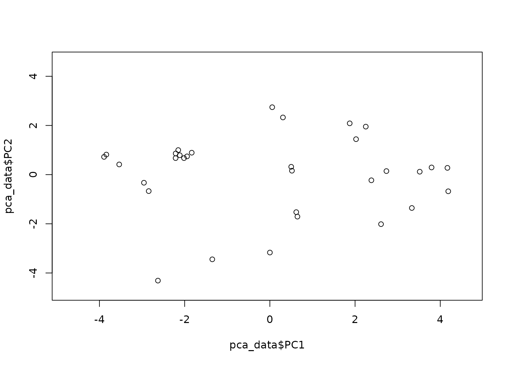

step_pca_truncated creates a specification of a recipe step that will
convert numeric data into one or more principal components. It is truncated
as it only calculates the number of components it is asked instead of all of
them as is done in recipes::step_pca().
Arguments
- recipe
A recipe object. The step will be added to the sequence of operations for this recipe.
- ...
One or more selector functions to choose variables for this step. See
selections()for more details.- role
For model terms created by this step, what analysis role should they be assigned? By default, the new columns created by this step from the original variables will be used as predictors in a model.
- trained
A logical to indicate if the quantities for preprocessing have been estimated.
- num_comp
The number of components to retain as new predictors. If
num_compis greater than the number of columns or the number of possible components, a smaller value will be used. Ifnum_comp = 0is set then no transformation is done and selected variables will stay unchanged.- options
A list of options to the default method for
irlba::prcomp_irlba(). Argument defaults are set toretx = FALSE,center = FALSE,scale. = FALSE, andtol = NULL. Note that the argumentxshould not be passed here (or at all).- res
The
irlba::prcomp_irlba()object is stored here once this preprocessing step has be trained byprep().- columns
A character string of variable names that will be populated elsewhere.
- prefix
A character string for the prefix of the resulting new variables. See notes below.
- keep_original_cols
A logical to keep the original variables in the output. Defaults to
FALSE.- skip
A logical. Should the step be skipped when the recipe is baked by
bake()? While all operations are baked whenprep()is run, some operations may not be able to be conducted on new data (e.g. processing the outcome variable(s)). Care should be taken when usingskip = TRUEas it may affect the computations for subsequent operations.- id
A character string that is unique to this step to identify it.
Value
An updated version of recipe with the new step added to the
sequence of any existing operations.
Details
Principal component analysis (PCA) is a transformation of a group of variables that produces a new set of artificial features or components. These components are designed to capture the maximum amount of information (i.e. variance) in the original variables. Also, the components are statistically independent from one another. This means that they can be used to combat large inter-variables correlations in a data set.
It is advisable to standardize the variables prior to running PCA. Here, each
variable will be centered and scaled prior to the PCA calculation. This can
be changed using the options argument or by using step_center() and
step_scale().
The argument num_comp controls the number of components that will be
retained (the original variables that are used to derive the components are
removed from the data). The new components will have names that begin with
prefix and a sequence of numbers. The variable names are padded with zeros.
For example, if num_comp < 10, their names will be PC1 - PC9. If
num_comp = 101, the names would be PC001 - PC101.
Tidying
When you tidy() this step, use either type = "coef" for
the variable loadings per component or type = "variance" for how much
variance each component accounts for.
Tuning Parameters
This step has 1 tuning parameters:
num_comp: # Components (type: integer, default: 5)
Case weights
This step performs an unsupervised operation that can utilize case weights.
As a result, case weights are only used with frequency weights. For more
information, see the documentation in case_weights and the examples on
tidymodels.org.
Examples
rec <- recipe(~., data = mtcars)
pca_trans <- rec %>%
step_normalize(all_numeric()) %>%
step_pca_truncated(all_numeric(), num_comp = 2)
pca_estimates <- prep(pca_trans, training = mtcars)
pca_data <- bake(pca_estimates, mtcars)
rng <- extendrange(c(pca_data$PC1, pca_data$PC2))
plot(pca_data$PC1, pca_data$PC2,
xlim = rng, ylim = rng
)

tidy(pca_trans, number = 2)
#> # A tibble: 1 × 4
#> terms value component id
#> <chr> <dbl> <chr> <chr>
#> 1 all_numeric() NA NA pca_truncated_AGa8C
tidy(pca_estimates, number = 2)
#> # A tibble: 22 × 4
#> terms value component id
#> <chr> <dbl> <chr> <chr>
#> 1 mpg 0.363 PC1 pca_truncated_AGa8C
#> 2 cyl -0.374 PC1 pca_truncated_AGa8C
#> 3 disp -0.368 PC1 pca_truncated_AGa8C
#> 4 hp -0.330 PC1 pca_truncated_AGa8C
#> 5 drat 0.294 PC1 pca_truncated_AGa8C
#> 6 wt -0.346 PC1 pca_truncated_AGa8C
#> 7 qsec 0.200 PC1 pca_truncated_AGa8C
#> 8 vs 0.307 PC1 pca_truncated_AGa8C
#> 9 am 0.235 PC1 pca_truncated_AGa8C
#> 10 gear 0.207 PC1 pca_truncated_AGa8C
#> # ℹ 12 more rows